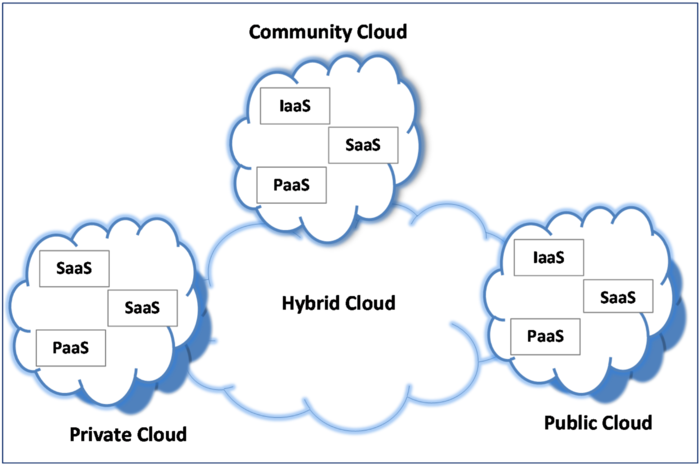

Cloud Computing
Cloud computing, one of the latest concepts in today's computing world is seeing an exponential growth rate as most of the tech companies in the world are moving towards adopting cloud-based services. This article tenders to give you a small insight into this very interesting and exciting concept.
Cloud technology, a relatively new, decade-old concept has already made its presence felt in most of the online tools we use today. This includes various services such as videos, music, documents, email, etc all of them which are available on the internet.
Cloud computing is the delivery of computing services-servers, storage, databases, networking, software, analytics and more-over the Internet.
This concept is similar to the payment of an electricity bill which is a pay per use service. Cloud uses this feature where the user of a particular cloud service is billed according to his usage. This reduces the cost of initialization and maintenance to a great extent.

Cloud computing can be divided into 3 broad categories: infrastructure as a service (IaaS), platform as a service (PaaS) and software as a service (Saas).
Infrastructure-as-a-Service: One of the most basic types of cloud computing, users can rent servers and virtual machines, storage, networks, operating systems and pay per usage. Platform-as-a-Service: Offers services for developers for developing, testing, delivering and managing software applications. Developers can quickly create websites or applications without having to worry about storage, network and databases. Software-as-a-Service: Delivering software applications over the Internet, cloud providers manage and handle infrastructure including maintenance, like software upgrades and security patching.
Cloud computing resources can be deployed in 3 different ways: public cloud, private cloud and hybrid cloud. In a public cloud, all hardware, software and other supporting infrastructure are owned and managed by the cloud provider. A private cloud, one which is used by a single business or organization maintains its services and infrastructure on a private network. Hybrid clouds combine public and private clouds and offering more flexibility and deployment options.
Most cloud computing companies offer a user-friendly GUI to manage their services and subscriptions. A few others also offer a Command Line Interface and also the ability to work with API's giving developers a multitude of options.
A cloud architect is responsible for overseeing the implementation of the cloud network and also monitoring cloud application architecture and its deployment. A large number of companies such as Amazon, Microsoft, VMware, IBM have turned into cloud providers offering a wide range of cloud services.
In recent years most companies big or small are adopting cloud-based services opening a wide range of opportunities for budding cloud architects. The trend is likely to grow as cloud technology offers a cheap, fast and reliable alternative to the conventional method.